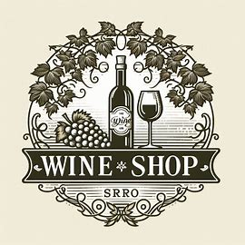

Nossa hitória
Descubra a Tradição e a Paixão da Vinícola Centenária “Vinícola dos Almeida Dias”
Estamos há mais de cem anos:
Nas montanhas ensolaradas e de clima ameno do Espirito Santo, nasceu a Vinícola Vinícola dos Almeida Dias. Fundada em 1895 por Jorge e Elzeli de Almeida Dias, esta vinícola é um testemunho vivo da dedicação e paixão que atravessam gerações.
Tudo começou com um sonho simples:
produzimos vinhos de qualidade que captura a essência da terra e a alma da família. Jorge e Elzeli plantaram as primeiras videiras com suas próprias mãos, cuidando de cada planta com amor e paciência. Com o passar dos anos, seus filhos e netos continuaram essa tradição, aprimorando as técnicas de cultivo e vinificação, sempre respeitando os métodos artesanais que garantem a autenticidade de cada garrafa.
A Vinícola Vinícola dos Almeida Dias:
É reconhecida mundialmente pela excelência de seus vinhos. Cada safra é uma celebração da herança familiar, combinando o melhor da tradição com inovações modernas. Nossos vinhos são produzidos com uvas selecionadas, colhidas no auge da maturação, e passam por um rigoroso processo de vinificação que preserva os sabores e aromas únicos de cada variedade.